2 First steps
The goal of this chapter is to teach you how to produce useful
graphics with ggplot2 as quickly as possible. You’ll learn the basics of
ggplot() along with some useful “recipes” to make the most important
plots. ggplot() allows you to make complex plots with just a few lines
of code because it’s based on a rich underlying theory, the grammar of
graphics. Here we’ll skip the theory and focus on the practice, and in
later chapters you’ll learn how to use the full expressive power of the
grammar.
2.2.1 Exercises
- List five functions that you could use to get more information about
the
mpg dataset.
Answer:
Five common base R functions I use to interrogate dataframes are:
summary()hist()plot()lm()View()
GG Solutions:
help(mpg): Documentation of datasetdim(mpg): Dimensions of datasetsummary(mpg): Summary measures of datasetstr(mpg): Display of the internal structure of
datasetglimpse(mpg): dplyr version of
str(mpg)
- How can you find out what other datasets are included with
ggplot2?
Answer: use data(package = "ggplot2"), which returns the
following:
Data sets in package ‘ggplot2’:
diamonds Prices of over 50,000 round cut diamonds
economics US economic time series
economics_long US economic time series
faithfuld 2d density estimate of Old Faithful data
luv_colours 'colors()' in Luv space
midwest Midwest demographics
mpg Fuel economy data from 1999 to 2008 for 38 popular models of
cars
msleep An updated and expanded version of the mammals sleep dataset
presidential Terms of 12 presidents from Eisenhower to Trump
seals Vector field of seal movements
txhousing Housing sales in TX
GG Solutions:
data(package = "ggplot2") loads the available data sets
in ggplot2. Alternatively,if you have internet access, go to https://ggplot2.tidyverse.org/reference/index.html#section-data
- Apart from the US, most countries use fuel consumption (fuel
consumed over fixed distance) rather than fuel economy (distance
travelled with fixed amount of fuel). How could you convert
cty and hwy into the European standard of
l/100km?
Answer: to convert miles/gallon to liters/100km, we use the
formula:
\(\frac{1}{miles/gallon} \times
\frac{3.78541}{1.609344 \div 100} = l/100km\)
mpg_l100km <- function(x) {
(1 / x) * 3.78541 / (1.609344 / 100)
}
# Need to use ggplot2::mpg to disambiguate for build_analysis_site()
ggplot2::mpg |>
mutate(cty = mpg_l100km(cty), hwy = mpg_l100km(hwy))
GG Solutions:
According to asknumbers, you
divide 235.214583 by the mpg values in cty and
hwy to convert them into the European standard of
l/100km.
Function to convert into European standard (Rademaker,
2016):
mpgTol100km <- function(milespergallon) {
GalloLiter <- 3.785411784
MileKilometer <- 1.609344
l100km <- (100 * GalloLiter) / (milespergallon * MileKilometer)
l100km
}
- Which manufacturer has the most models in this dataset? Which model
has the most variations? Does your answer change if you remove the
redundant specification of drive train (e.g. “pathfinder 4wd”, “a4
quattro”) from the model name?
Answer: we can generate a dataframe with manufacturers, models, and
variations using:
mpg_summary <- ggplot2::mpg |>
count(manufacturer, model) |>
rename(variations = n)
mpg_summary
The model with the most variations is the Dodge Caravan 2wd.
mpg_summary |>
arrange(variations) |>
tail(1)
The manufacturer with the most models is Toyota.
mpg_summary |>
count(manufacturer) |>
arrange(n) |>
tail(1)
If we first remove the redundant drive train from the summary, we
get:
mpg_summary2 <- ggplot2::mpg |>
mutate(model = gsub(" (quattro)|(2wd)|(4wd)|(awd)$", "", model)) |>
count(manufacturer, model) |>
rename(variations = n)
mpg_summary2
The model with the most variations has changed to the Audi A4.
mpg_summary2 |>
arrange(variations) |>
tail(1)
The manufacturer with the most models is still Toyota.
mpg_summary2 |>
count(manufacturer) |>
arrange(n) |>
tail(1)
GG Solutions:
Not included here because I believe the answer to question 4 in 2.2
Exercises is incorrect, as it counts variants by manufacturer, not
models by manufacturer.
2.3.1 Exercises
- How would you describe the relationship between
cty and
hwy? Do you have any concerns about drawing conclusions
from that plot?
Answer: we can explore the relationship using a scatterplot:
ggplot(ggplot2::mpg, aes(cty, hwy)) +
geom_point()
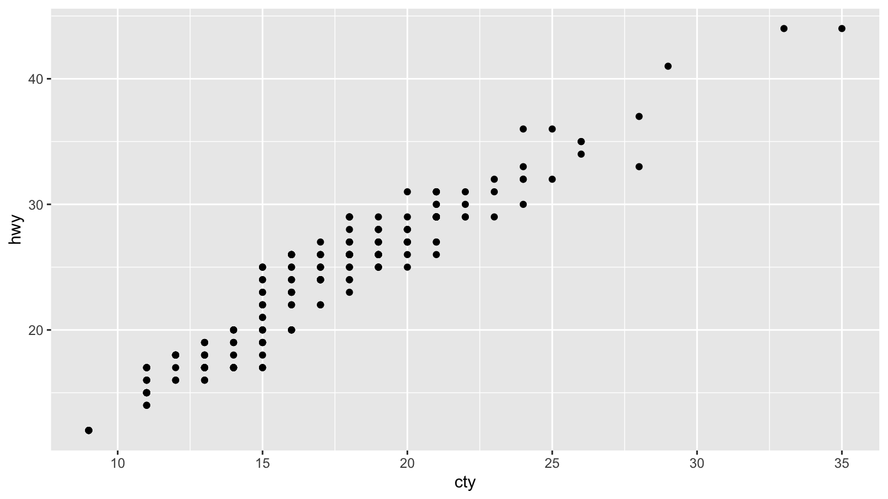
There is a strong correlation between cty and
hwy, which is expected since these are both measures of
fuel efficiency of the same car.
GG Solutions:
- The plot shows a strongly linear relationship, which tells me that
cty and hwy are highly correlated variables.
The only concern I have is that the points seem to be overlapping.
- There is not much insight to be gained except that cars which are
fuel efficient on a highway are also fuel efficient in cities. This
relationship is probably a function of speed (Rademaker, 2016)
- What does
ggplot(mpg, aes(model, manufacturer)) + geom_point() show?
Is it useful? How could you modify the data to make it more
informative?
Answer: this plot shows each model as a point for each manufacturer,
which is not particularly useful, although it does allow for a quick
count of models by manufacturer. A bar chart showing count of models by
manufacturer would be more useful.
ggplot(ggplot2::mpg, aes(model, manufacturer)) +
geom_point()
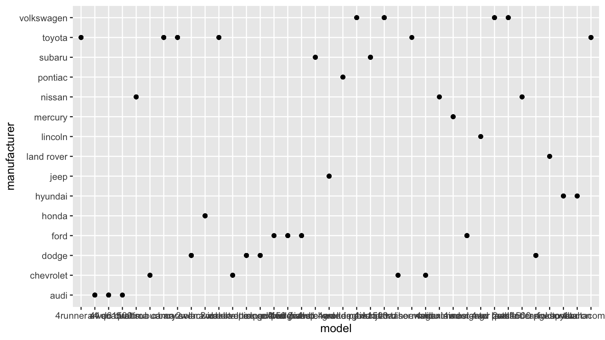
GG Solutions:
- The plot shows the manufacturer of each model. Its not very readable
since there are too many models and this clutters up the x-axis with too
many ticks! I would just plot 20 or so models so that the graph is more
readable. See below:
ggplot2::mpg %>%
head(25) %>%
ggplot(aes(model, manufacturer)) +
geom_point()
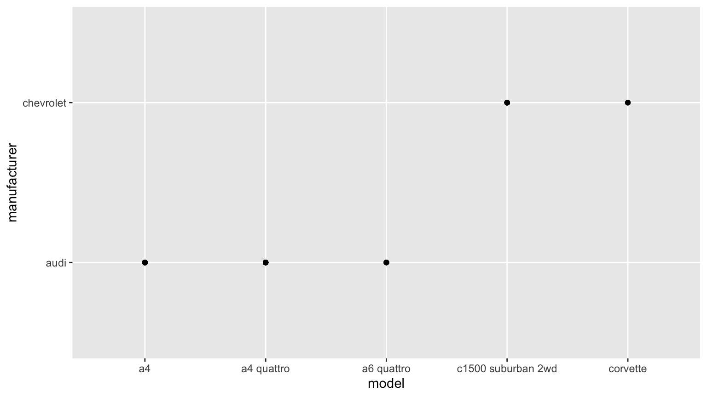
- A possible alternative would be to look total number of observations
for each manufacturer-model combination using geom_bar(). (Rademaker,
2016)
df <- ggplot2::mpg %>%
transmute("man_mod" = paste(manufacturer, model, sep = " "))
ggplot(df, aes(man_mod)) +
geom_bar() +
coord_flip()

Note: I prefer my solution for this exercise.
Describe the data, aesthetic mappings and layers used for each of
the following plots. You’ll need to guess a little because you haven’t
seen all the datasets and functions yet, but use your common sense! See
if you can predict what the plot will look like before running the
code.
ggplot(mpg, aes(cty, hwy)) + geom_point()ggplot(diamonds, aes(carat, price)) + geom_point()ggplot(economics, aes(date, unemploy)) + geom_line()ggplot(mpg, aes(cty)) + geom_histogram()
Answer:
ggplot(mpg, aes(cty, hwy)) + geom_point() - scatterplot
of city mpg against highway mpgggplot(diamonds, aes(carat, price)) + geom_point() -
scatterplot of diamond weight in carats against priceggplot(economics, aes(date, unemploy)) + geom_line() -
a line plot showing the unemployment rate over timeggplot(mpg, aes(cty)) + geom_histogram() - a histogram
of city mpg
ggplot(ggplot2::mpg, aes(cty, hwy)) +
geom_point()
ggplot(diamonds, aes(carat, price)) +
geom_point()
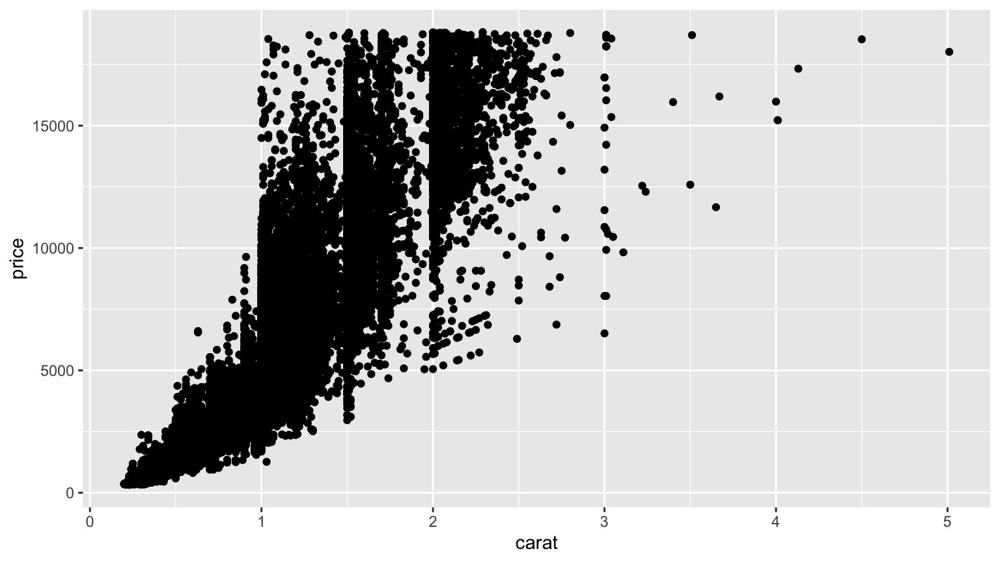
ggplot(economics, aes(date, unemploy)) +
geom_line()
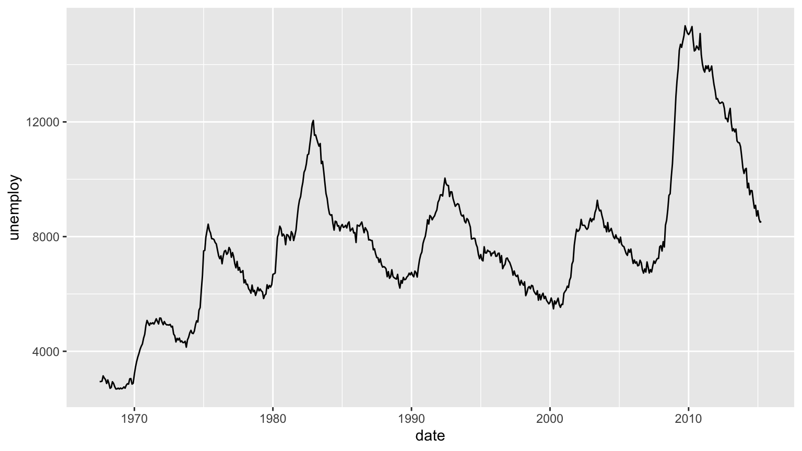
ggplot(ggplot2::mpg, aes(cty)) +
geom_histogram()
#> `stat_bin()` using `bins = 30`. Pick better value with `binwidth`.
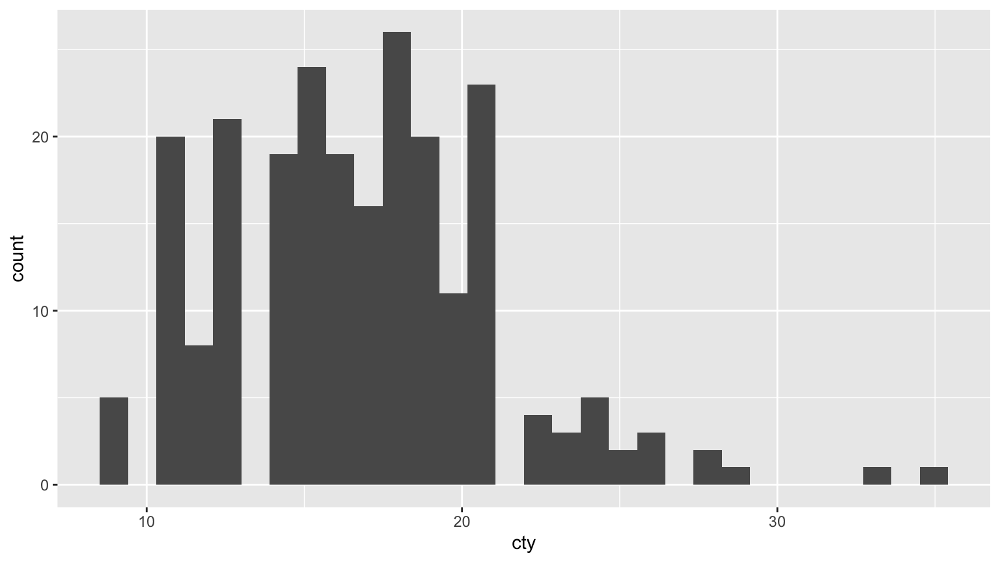
In general, my guesses are correct (given my existing experience with
ggplot), except for the economics plot, which appears to show the number
of unemployed people instead of an employment rate.
GG Solutions: (Rademaker, 2016)
ggplot(mpg, aes(cty, hwy)) + geom_point()
- Data:
mpg
- Aesthetic: highway miles per gallon is mapped to y position
and city miles per gallon is mapped to x position.
- Layer: points
ggplot(diamonds, aes(carat, price)) + geom_point()
- Data:
diamonds
- Aesthetic: price in US dollars is mapped to y position,
weight of the diamond is mapped to x position.
- Layer: points
ggplot(economics, aes(date, unemploy)) + geom_line()
- Data:
economics
- Aesthetic: median duration of unemployment, in weeks, is
mapped to y position and month of data collection is mapped to x
position.
- Layer: line
2.4.1 Exercises
- Experiment with the colour, shape and size aesthetics. What happens
when you map them to continuous values? What about categorical values?
What happens when you use more than one aesthetic in a plot?
Answer: observations based on the plots below:
- Using a continuous variable with shape generates an error
- Using a categorical variable with shape for more than 6 values
generates a warning
- Using a continuous variable with size works well
- Using a categorical variable with size generates a warning
- Using a continuous variable with color creates a gradient
- Using a categorical variable with color creates a discrete
mapping
- Multiple aesthetics can overload the plot
# continuous
ggplot(ggplot2::mpg, aes(displ, hwy, color = cyl)) +
geom_point()
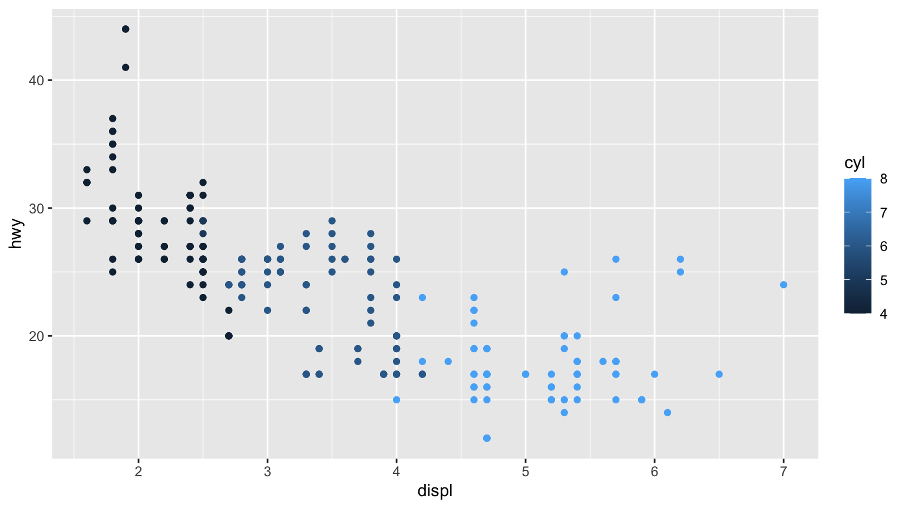
# categorical
ggplot(ggplot2::mpg, aes(displ, hwy, color = drv)) +
geom_point()
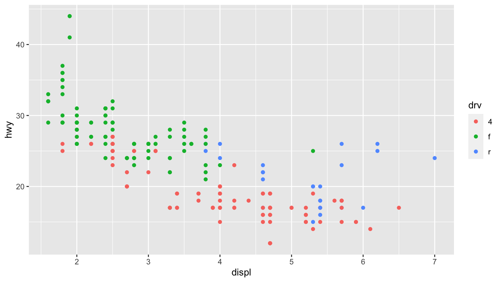
# multiple
ggplot2::mpg |>
mutate(year = as.factor(year)) |>
ggplot(aes(displ, hwy, color = drv, size = cyl, shape = year)) +
geom_point()
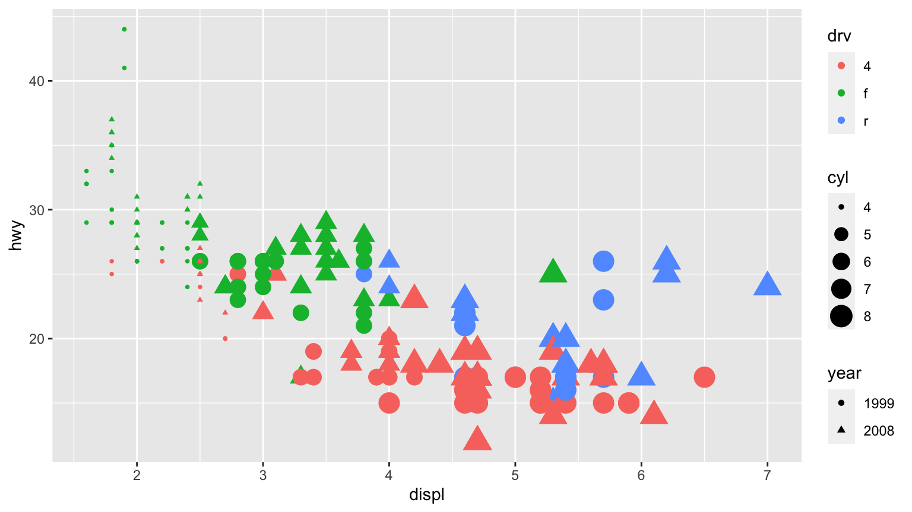
GG Solutions offers a similar and less complete answer.
- What happens if you map a continuous variable to shape? Why? What
happens if you map
trans to shape? Why?
Answer: As noted above, using a continuous variable with shape
generates an error, because plots must have discrete shapes. Using a
categorical variable with shape for more than 6 values (like
trans) generates a warning, since (as the error notes) many
different shapes can be hard to distinguish on a plot.
GG Solutions presents a similar answer.
- How is drive train related to fuel economy? How is drive train
related to engine size and class?
Answer: The plots below show that:
- Front wheel drive is correlated with higher fuel economy
- Front wheel drive is correlated with smaller displacement, rear
wheel drive is correlated with larger displacement, and four wheel drive
is not correlated with displacement
- Some classes only have a single drive train:
- Two seaters only have rear wheel drive
- Minivans only have front wheel drive
- Pickups only have four wheel drive
ggplot(ggplot2::mpg, aes(hwy, drv)) +
geom_point()
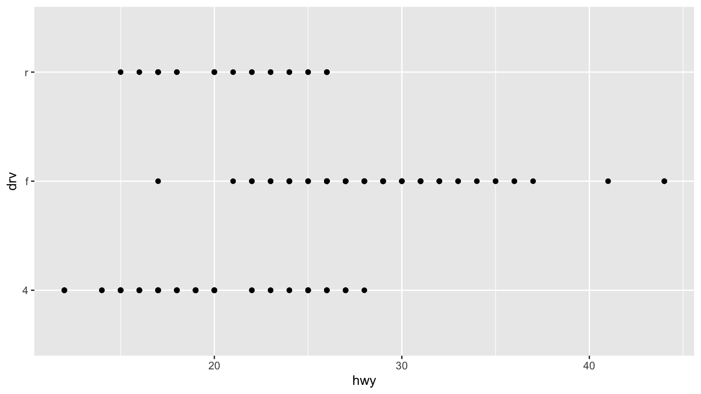
ggplot(ggplot2::mpg, aes(displ, drv)) +
geom_point()
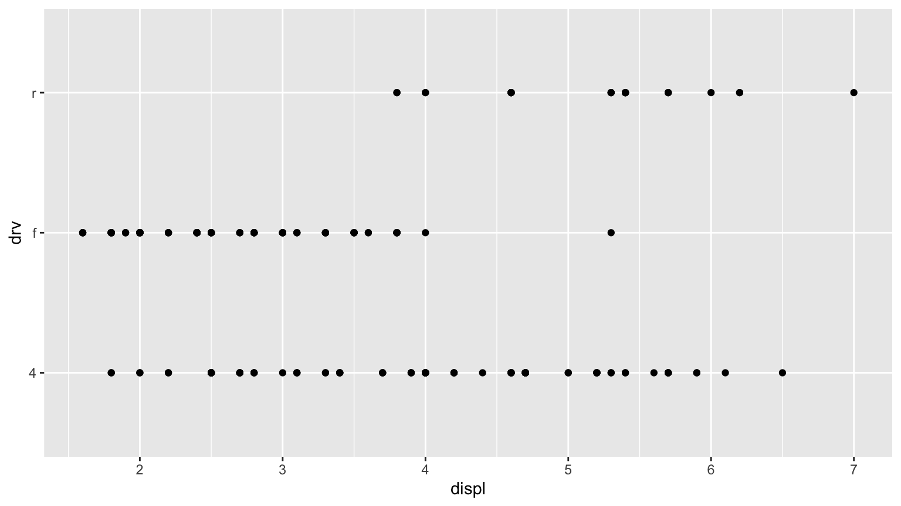
ggplot(ggplot2::mpg, aes(class, drv)) +
geom_point()
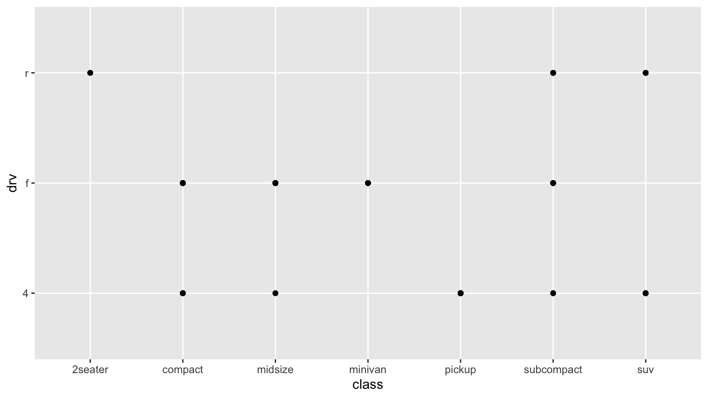
GG Solutions presents a similar answer using bar charts, and compares
engine size and class together in a single plot.
Note: GG Solutions does not explore the relationship between drive
train and class.
2.5.1 Exercises
- What happens if you try to facet by a continuous variable like
hwy? What about cyl? What’s the key
difference?
Answer: faceting on a continuous variable creates a facet for each
unique value in the data frame, which holds true for both
hwy and cyl. The key difference is that
cyl has fewer unique values, making the plot more readable
and useful.
ggplot(ggplot2::mpg, aes(displ, cty)) +
geom_point() +
facet_wrap(vars(hwy))
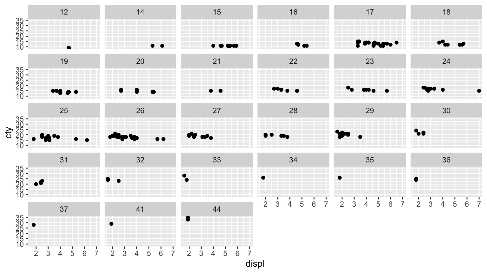
ggplot(ggplot2::mpg, aes(displ, cty)) +
geom_point() +
facet_wrap(vars(cyl))
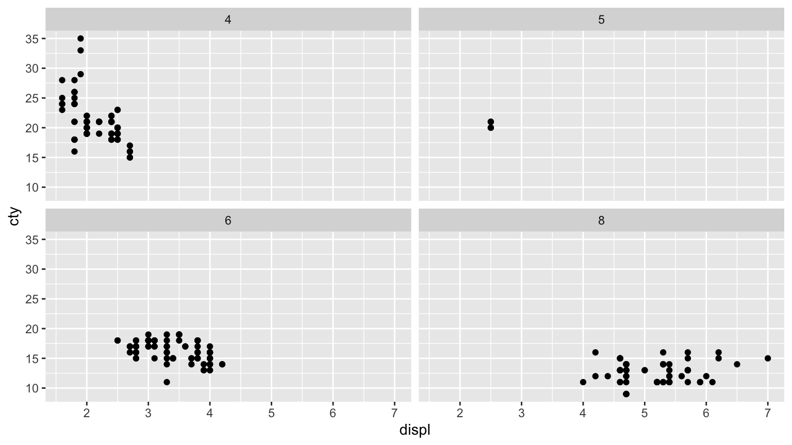
GG Solutions:
- The key difference is
hwy is a continuous variable that
has 27 unique values, so you get 27 different subsets. However,
cly is a categorical variable and has 4 unique values, so
cyl only has 4 different subsets. It is less cluttered when
you try to facet.
- (Rademaker, 2016) Faceting by a continuous variable works but
becomes hard to read and interpret when the variable that we facet by
has too many levels.
- Use faceting to explore the 3-way relationship between fuel economy,
engine size, and number of cylinders. How does faceting by number of
cylinders change your assessment of the relationship between engine size
and fuel economy?
Answer: engines with fewer cylinders have a stronger relationship
between displacement and fuel economy (where larger engines have poorer
fuel economy), strongest with 4 cylinders, unclear with 5 (due to
limited data), weaker with 6, and no apparent relationship with 8.
ggplot(ggplot2::mpg, aes(displ, hwy)) +
geom_point() +
geom_smooth(method = "lm", formula = y ~ x) +
facet_wrap(vars(cyl))
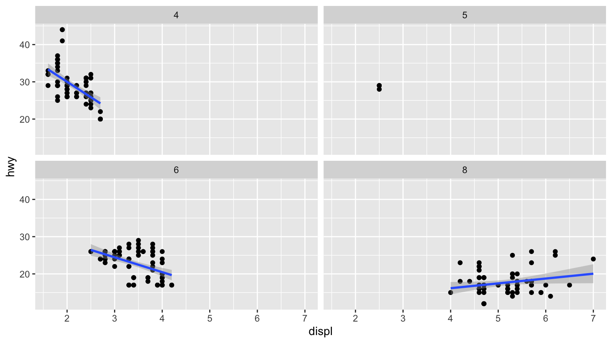
GG Solutions:
- When I initially plot engine size and fuel economy, I see an overall
decreasing linear relationship. Upon faceting, I see that the decreasing
relationship is mostly seen in the 4 cylinder subset. In the other
cylinder subsets, we see a flat relationship - as engine displacement
increases, fuel economy remains constant.
- Read the documentation for
facet_wrap(). What arguments
can you use to control how many rows and columns appear in the
output?
Answer: use nrow and ncol.
GG Solutions:
- I can use the arguments
nrow, ncol to control how many
rows and columns appear in the output.
- What does the
scales argument to
facet_wrap() do? When might you use it?
Answer: the scales argument determines whether scales
are fixed (the default) or free on one or both dimensions. Using
scales = "free" is helpful when comparing relationships
when scale is less important, as shown in this reworked example of
exercise 2, which focuses on the smoothed plot:
ggplot(ggplot2::mpg, aes(displ, hwy)) +
geom_point() +
geom_smooth(method = "lm", formula = y ~ x) +
facet_wrap(vars(cyl), scales = "free")
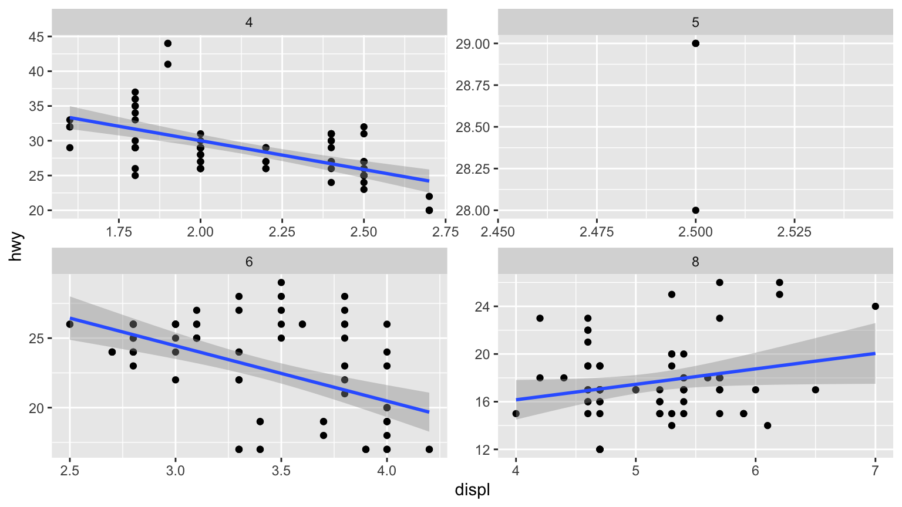
GG Solutions:
- It allows users to decide whether scales should be fixed. I would
use it whenever different subsets of the data are on vastly different
scales.
- (Rademaker, 2016) If we want to compare across facets,
scales = "fixed" is more appropriate. If our focus is on
individual patterns within each facet, setting
scales = "free" might be more appropriate.
2.6.6 Exercises
- What’s the problem with the plot created by
ggplot(mpg, aes(cty, hwy)) + geom_point()? Which of the
geoms described above is most effective at remedying the problem?
Answer: as noted in GG Solutions, the problem is overplotting, which
geom_jitter fixes:
ggplot(ggplot2::mpg, aes(cty, hwy)) +
geom_point() +
geom_jitter()
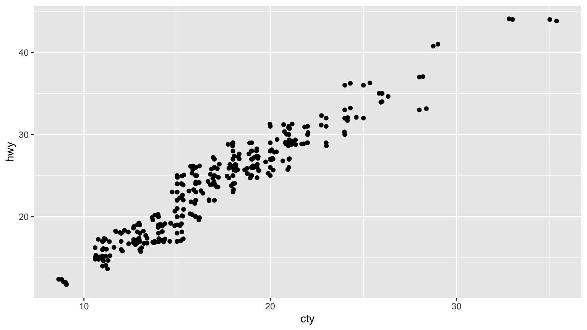
GG Solutions:
- The problem is overplotting.
Solution 1. Use geom_jitter to add random noise to the
data and avoid overplotting.
Solution 2. (Rademaker, 2016) Set opacity with alpha
One challenge with
ggplot(mpg, aes(class, hwy)) + geom_boxplot() is that the
ordering of class is alphabetical, which is not terribly
useful. How could you change the factor levels to be more
informative?
Rather than reordering the factor by hand, you can do it
automatically based on the data:
ggplot(mpg, aes(reorder(class, hwy), hwy)) + geom_boxplot().
What does reorder() do? Read the documentation.
Answer: as noted in the exercise, ordering of class by
hwy is more informative. reorder() reorders
levels based on the second, numeric value, by default using the
mean.
ggplot(ggplot2::mpg, aes(class, hwy)) +
geom_boxplot()
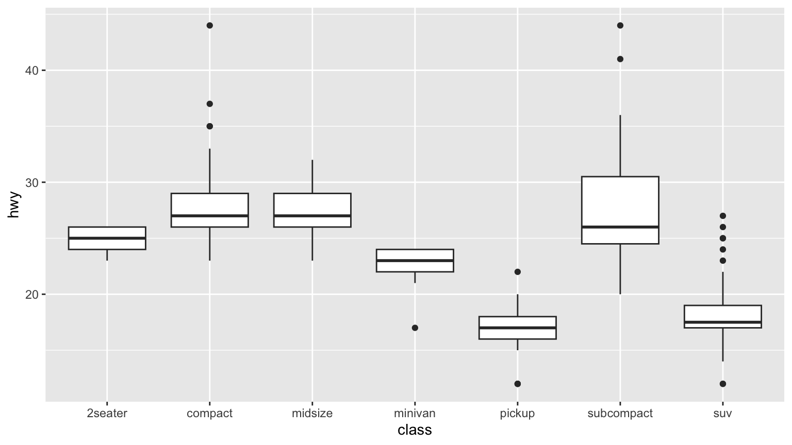
ggplot(ggplot2::mpg, aes(reorder(class, hwy), hwy)) +
geom_boxplot()
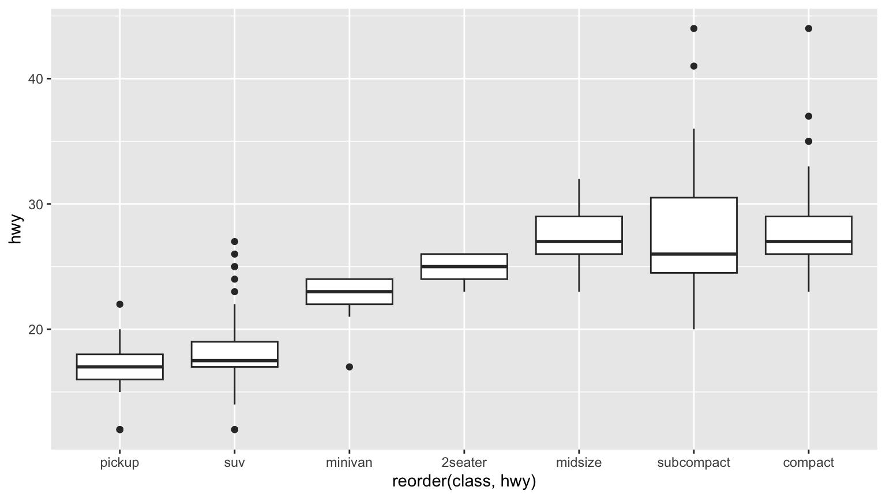
GG Solutions takes a similar approach but instead uses
mutate(class = factor(class), class = fct_reorder(class, hwy)).
- Explore the distribution of the carat variable in the
diamonds dataset. What binwidth reveals the
most interesting patterns?
Answer: using trial and error, binwidth = 0.01 reveals
that carat weight is skewed towards round numbers (1, 1.25, 1.5, 2,
etc.). Using the smaller binwidth = 0.005 doesn’t improve
the pattern, and makes it harder to see.
ggplot(diamonds, aes(carat)) +
geom_histogram(binwidth = 0.1)
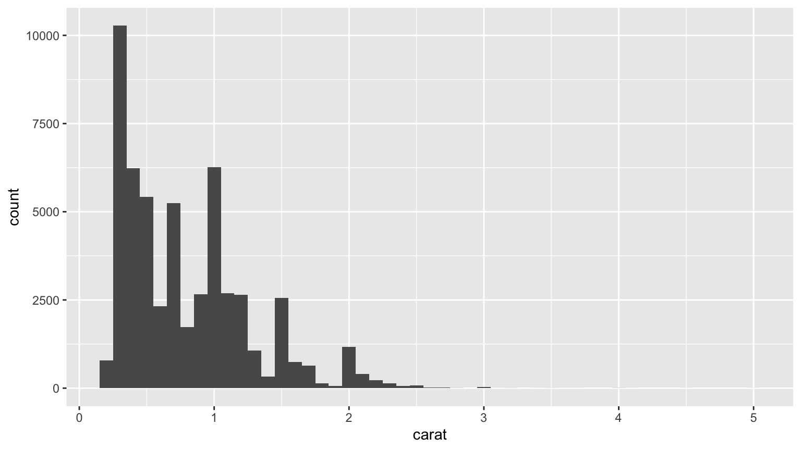
ggplot(diamonds, aes(carat)) +
geom_histogram(binwidth = 0.01)
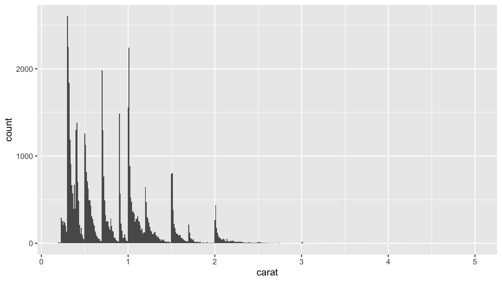
ggplot(diamonds, aes(carat)) +
geom_histogram(binwidth = 0.005)
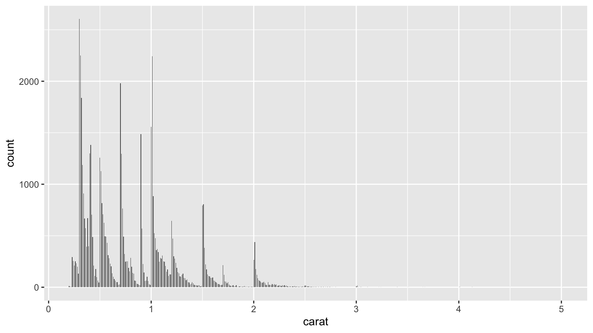
GG Solutions:
- This is a subjective answer, but
binwidth of 0.2 or 0.3
reveals that the distribution of carat is heavily skewed to the right.
This means that most diamonds carats are between 0 and 1.
- Explore the distribution of the price variable in the
diamonds data. How does the distribution vary by cut?
Answer: a boxplot of price by cut shows that better cuts aren’t
necessarily more expensive.
However, as noted in my R Training
Log:
7.6
Patterns and models covers models and residuals, here showing how to
reveal the expected relationship between cut and price:
We can remove the relationship between carats and price, and redo the
boxplot:
ggplot(diamonds, aes(cut, price)) +
geom_boxplot()
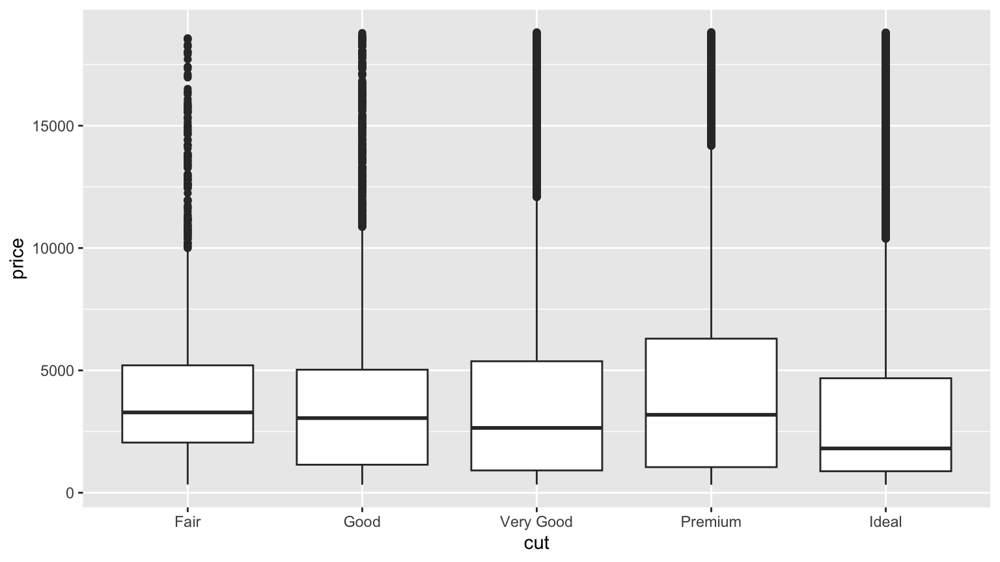
# remove carat weight as a confounding variable
mod <- lm(log(price) ~ log(carat), data = diamonds)
diamonds2 <- diamonds |>
add_residuals(mod) |>
mutate(resid = exp(resid))
ggplot(data = diamonds2) +
geom_boxplot(mapping = aes(x = cut, y = resid))
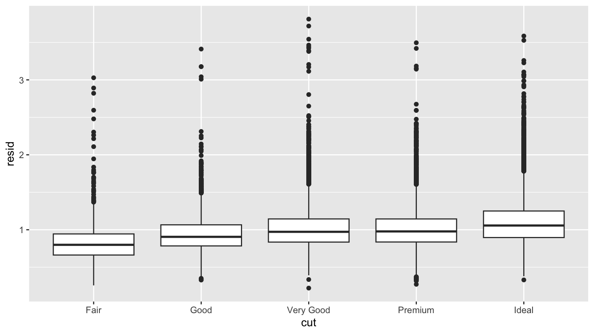
GG Solutions uses both a boxplot and a frequency polygon to compare
cuts, and concludes:
- (Rademaker, 2016) Fair quality diamonds are more expensive then
others. Possible reason is they are bigger.
- You now know (at least) three ways to compare the distributions of
subgroups:
geom_violin(), geom_freqpoly() and
the colour aesthetic, or geom_histogram() and faceting.
What are the strengths and weaknesses of each approach? What other
approaches could you try?
Answer: Violin plots convey the most information but require an
understanding of probability density. Frequency polygons allow for
direct comparison on the same plot - in contrast, faceted histograms
provide a better visualization of each variable, but make comparison
more difficult. Other approaches include comparing boxplots, multiple
density plots, or side-by-side histograms - a bar plot showing multiple
variables for each bin.
GG Solutions:
- According to the book,
geom_violin() shows a compact
representation of the “density” of the distribution, highlighting the
areas where more points are found. Its weakness is that violin plots
rely on the calculation of a density estimate, which is hard to
interpret.
- According to the book,
geom_freqploy() bins the data,
then counts the number of observations in each bin using lines. One
possible weakness is that you have to select the width of the bins
yourself by experimentation.
- According to the book,
geom_histogram() and faceting
makes it easier to see the distribution of each group, but makes
comparisons between groups a little harder.
- Read the documentation for
geom_bar(). What does the
weight aesthetic do?
Answer: for geom_bar(), the weight
aesthetic changes the height of the bar from the number of cases in each
group to the sum of the weights.
GG Solutions:
- The
weight aesthetic converts the number of cases to a
weight and makes the height of the bar proportional to the sum of the
weights. See below:
g <- ggplot(ggplot2::mpg, aes(class))
# Number of cars in each class:
g + geom_bar()
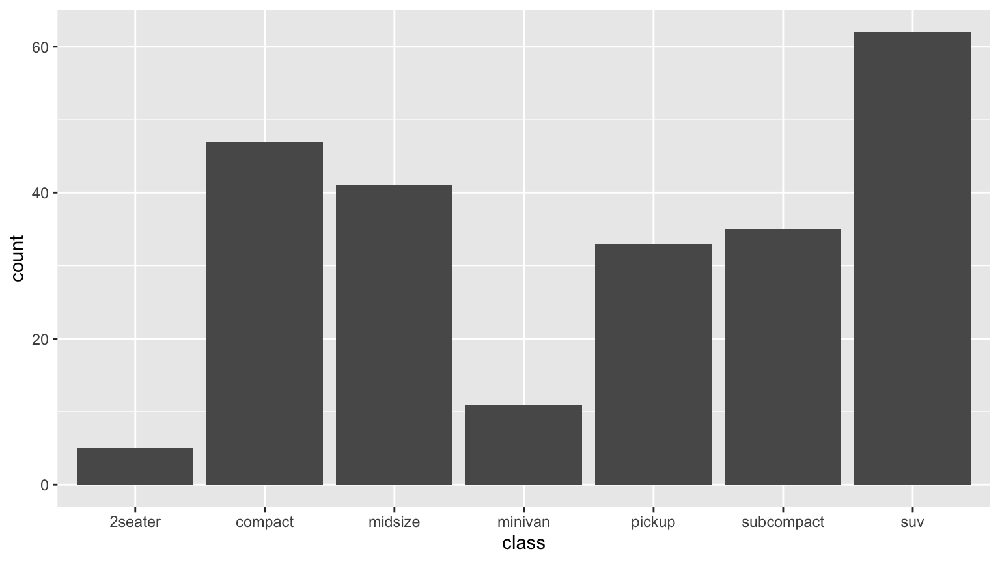
# Total engine displacement of each class
g + geom_bar(aes(weight = displ))
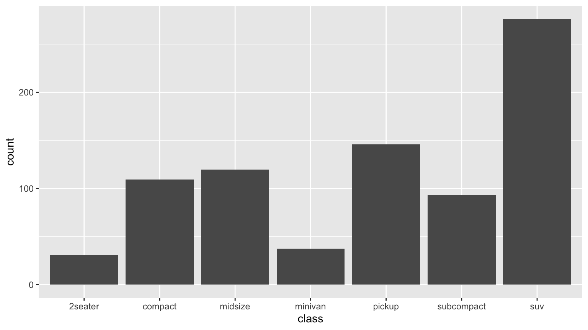
- Using the techniques already discussed in this chapter, come up with
three ways to visualise a 2d categorical distribution. Try them out by
visualising the distribution of
model and
manufacturer, trans and class,
and cyl and trans.
Answer: three ways to visualize categorical distributions:
- Bar charts
- A scatterplot using alpha
- A scatterplot using size
ggplot2::mpg[c("manufacturer", "model")] |>
unique() |>
ggplot(aes(manufacturer)) +
geom_bar(color = "black", fill = "white", width = 0.8) +
coord_flip() +
scale_x_discrete(limits = rev) +
labs(x = "", y = "models") +
theme_quo()
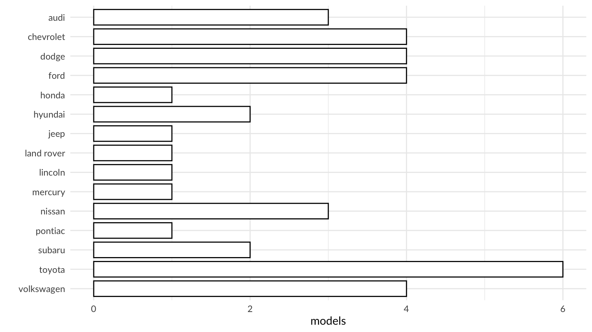
ggplot2::mpg |>
ggplot(aes(trans, class)) +
geom_point(alpha = 0.1) +
scale_y_discrete(limits = rev) +
labs(x = "", y = "") +
theme_quo()
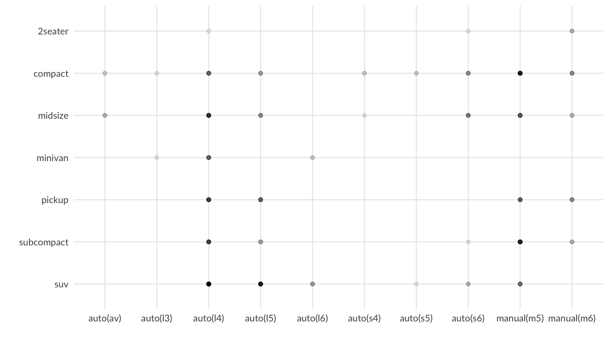
ggplot2::mpg |>
count(trans, cyl) |>
ggplot(aes(cyl, trans, size = n)) +
geom_point() +
scale_y_discrete(limits = rev) +
labs(x = "cylinders", y = "", size = "count") +
theme_quo(minor.x = FALSE)
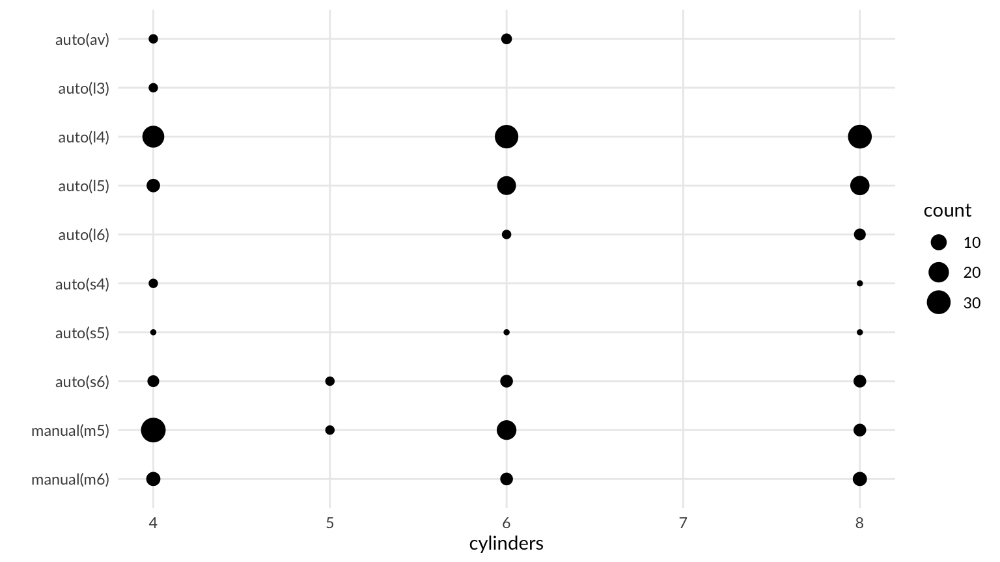
GG Solutions does not provide an answer.
